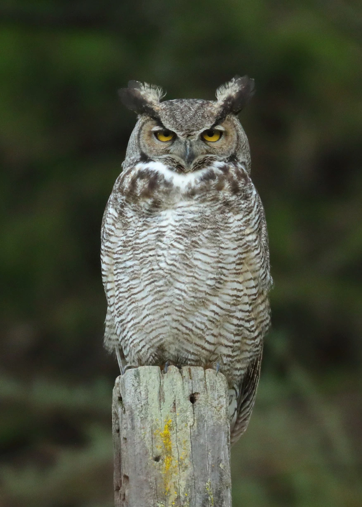

鸟类 · 动物界
雕鸮 Bubo bubo

欧亚大陆体型最大的鸮类之一，翼展可近 2 米，耳羽簇高耸，夜间凭着敏锐听觉在岩石与林缘捕猎。
- 分类
- 门脊索动物门纲鸟纲目鸮形目科鸱鸮科属雕鸮属
- 栖息环境
- 山地森林、岩壁峡谷、草原与荒漠边缘，也见于村庄附近的废墟和疏林
- 地理分布
- 欧亚大陆及北非，中国从东北、华北到西部山地均有分布，多为留鸟
- 保护级别
- IUCN 无危（LC）；中国国家二级保护动物
物种志
雕鸮体长 56–75 cm，翼展 160–188 cm，雌鸟体重可达 4 kg 以上，是欧亚大陆最大的猫头鹰之一。羽色从黄褐到棕褐，密布黑色纵纹和斑驳，头顶竖着两簇长长的耳羽，一双橙黄色大眼在月光下格外醒目。它的羽毛松软，飞行时几乎没有声响。
雕鸮广泛分布于欧亚大陆和北非的森林、山地、草原与荒漠，中国大部分地区都有分布，多为留鸟。它夜间活动，捕食鼠类、野兔、雉类、刺猬，甚至能捕杀幼年狐狸，是控制鼠害的重要夜行捕食者。雕鸮多在悬崖岩缝、树洞或地面凹坑营巢，每窝产卵 2–4 枚，孵化 31–36 天。由于栖息地减少和人为捕猎，中国将其列为国家二级保护动物，世界自然保护联盟评为无危。
形态与习性
- 食性鼠类、野兔、雉类、刺猬，偶尔捕食幼年狐与猫
- 体长56–75 cm
- 翼展160–188 cm
- 体重1.6–4.2 kg，雌鸟较大
- 繁殖每窝产卵 2–4 枚，孵化 31–36 天
- 寿命野外约 20 年，圈养可超过 30 年
- 听觉能在完全黑暗中凭声音定位雪下的田鼠
趣味知识
- 雕鸮头顶的耳羽簇并不是耳朵，只是装饰性羽毛，真正的耳孔藏在面部两侧。
- 它的羽毛边缘柔软，飞行时几乎没有声音，便于夜间悄悄接近猎物。
- 雕鸮会把整只猎物吞下，再把无法消化的毛和骨头吐成“食团”。
- 雕鸮在民间被称为“恨狐”，低沉的夜叫声常被误认为不祥之兆。
生态关系
- 捕食 → 北美鼠兔 夜行猛禽捕食鼠兔